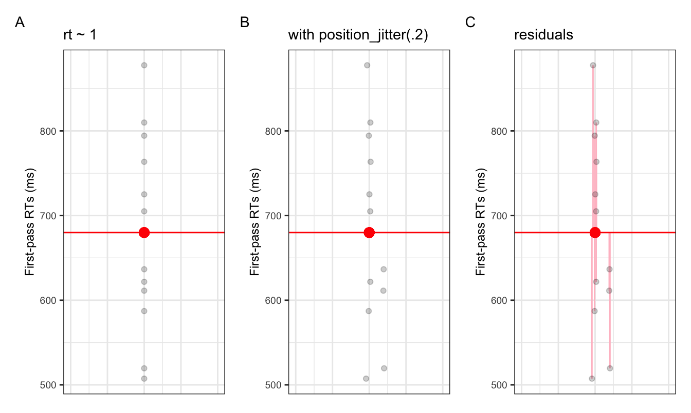

# suppress scientific notation
options(scipen=999)2 Simple linear regression
Regression for Linguists
{#sec-simple-regression}
Learning Objectives
Today we will learn…
- how to fit a simple linear model with the
lm()function - how to interpret our model output
Set-up environment
Make sure you always start with a clean R Environment (Session > Restart R). This means you should have no objects stored in your Environment, and no packages loaded. To ensure this, you can go to the Session tab (up where you’ll find File, Help, etc.), and select Restart R. You can also use the keyboard shortcut Cmd/Ctrl+Shift+0 (that’s a zero, not an ‘oh’).
In addition, I often prefer to run options(scipen=999) in order to supress scientific notation, which writes very large or very small numbers in an unintuitive way. For example, 0.000005 is written 5e-06 in scientific notation.
We’ll also need to load in our required packages. Hopefully you’ve already install the required packages (if not, go to Chapter 3).
# load libraries
pacman::p_load(
tidyverse,
here,
broom,
lme4,
janitor,
languageR)2.1 Simple linear model: RT ~ frequency
Recall that \(y \sim x\) can be read as “y as a function of x”, or “y predicted by x”. Following Winter (2019), we will first model some word frequency data. In this experiment, Our first model is given in equation \(\ref{eq-rt}\):
\[\begin{equation} RT \sim frequency \label{eq-rt} \end{equation}\]
Let’s load our data using the read_csv() function from readr. I also use the clean_names() function from the janitor package, which tidies up variable names (e.g., no spaces, all lower case).
# load ELP_frequency.csv
df_freq <- read_csv(here("data", "ELP_frequency.csv")) |>
clean_names()2.1.1 Mini-EDA
Let’s explore the data a little bit, which is what we would normally do before fitting any models. First, let’s see how the data is structured.
# print head of df_freq
head(df_freq)# A tibble: 6 × 3
word freq rt
<chr> <dbl> <dbl>
1 thing 55522 622.
2 life 40629 520.
3 door 14895 507.
4 angel 3992 637.
5 beer 3850 587.
6 disgrace 409 705 Looks like there are only 3 columns: word, freq, and rt. We can assume that they correspond to the word, its frequency, and the reaction time, respectively. We can also see in our global environment that there are 12 observations, meaning 12 rows.
The summary() function provides summaries of each variable in a dataframe. For numeric variables, it will provide descriptive statistics for the centre and spread of the data (mean, median, quartiles). For categorical data, it will provide the count per category. For character variables, simply lists the number of observations.
summary(df_freq) word freq rt
Length:12 Min. : 4.0 Min. :507.4
Class :character 1st Qu.: 57.5 1st Qu.:605.2
Mode :character Median : 325.0 Median :670.8
Mean : 9990.2 Mean :679.9
3rd Qu.: 6717.8 3rd Qu.:771.2
Max. :55522.0 Max. :877.5 We see freq has a pretty big range, from 4 to 55522. rt has a range of 507.38 to 877.53, with an average reaction time of 679.9. Let’s now get an overview of the relationship between freq and rt.
plot(df_freq$freq, df_freq$rt)We see there are a lot of frequency values below roughly 400, and these seem to have higher reaction times than those with a higher frequency value. Let’s fit these data to our first linear model to explore this effect of frequency on reaction times.
2.1.2 lm()
The the lm() function fits simple linear models. As arguments it takes a formula and a dataset, at minimum, as in equation \(\ref{eq-lm}\).
\[\begin{equation} lm(outcome \sim 1 + predictor,\;data\;=\;df\_name) \label{eq-lm} \end{equation}\]
The lm() function formula syntax can be read as: outcome predicted by the intercept (1 is a placeholder for the intercept) and predictor. The intercept is included by default, so if you omit the 1 the intercept is still included in the formula. If you wanted to remove the intercept (which you often don’t), you could replace 1 with 0.
2.1.2.1 Running a model
Before we add our predictor freq, let’s see what our model looks like without it. We can write it as:
lm(rt ~ 1, data = df_freq) But it’s useful to save the model as an object so that we can call on it later. It’s often a good idea to have informative prefixes to your objects
fit_rt_1 <- lm(rt ~ 1, data = df_freq)
Object naming
You may have wondered what the letters df are for when loading in our data set as df_freq. These letters stand for ‘data frame’, and serve as a reminder of what exactly that object in our environment is. We might also have wanted to plot the frequency data, in which case we could call save the plot as fig_freq or plot_freq. Here we are saving our model as fit_rt_1, using ‘fit’ to signal that this object is a model fit. You could also save it as mod_freq_1, lm_freq_1, or whatever you see fit. This simply helps keep our environment structured, which will become useful when you begin working with multiple datasets at a time.
2.1.2.2 Model ouput
Now that we’ve saved our model in our Enrivonement, we can call it by name. Printing just the model gives us the formula and the coefficients.
# print model
fit_rt_1
Call:
lm(formula = rt ~ 1, data = df_freq)
Coefficients:
(Intercept)
679.9 Recall that the intercept and slope are called coefficients. Why do we only see Intercept? Because we didn’t include any predictors in our model. This output isn’t very dense, however. We typically use the summary() function to print full model outputs.
summary(fit_rt_1)
Call:
lm(formula = rt ~ 1, data = df_freq)
Residuals:
Min 1Q Median 3Q Max
-172.537 -74.677 -9.137 91.296 197.613
Coefficients:
Estimate Std. Error t value Pr(>|t|)
(Intercept) 679.92 34.02 19.99 0.000000000538 ***
---
Signif. codes: 0 '***' 0.001 '**' 0.01 '*' 0.05 '.' 0.1 ' ' 1
Residual standard error: 117.8 on 11 degrees of freedomWe see a lot more information here.
broom package
The broom package has some useful functions for printing model outputs
tidy()produces atibble(type of dataframe) of thecoefficientsglance()produces goodness of fit measures (which we won’t discuss)
The outputs from tidy() and glance() can be fed into kable and/or kable_styling() to create formatted tables
tidy(fit_rt_1)# A tibble: 1 × 5
term estimate std.error statistic p.value
<chr> <dbl> <dbl> <dbl> <dbl>
1 (Intercept) 680. 34.0 20.0 5.38e-10glance(fit_rt_1)# A tibble: 1 × 12
r.squared adj.r.squared sigma statistic p.value df logLik AIC BIC
<dbl> <dbl> <dbl> <dbl> <dbl> <dbl> <dbl> <dbl> <dbl>
1 0 0 118. NA NA NA -73.7 151. 152.
# ℹ 3 more variables: deviance <dbl>, df.residual <int>, nobs <int>augment() adds model values as columns to your dataframe (e.g., useful for plotting observed vs. fitted values).
augment(fit_rt_1, data = df_freq) %>% summary()2.2 Interpreting model output
- let’s take a closer look at our model summary
summary(fit_rt_1)Call:
1lm(formula = rt ~ 1, data = df_freq)
Residuals:
Min 1Q Median 3Q Max
2-172.537 -74.677 -9.137 91.296 197.613
Coefficients:
3 Estimate Std. Error t value Pr(>|t|)
4(Intercept) 679.92 34.02 19.99 0.000000000538 ***
---
5Signif. codes: 0 ‘***’ 0.001 ‘**’ 0.01 ‘*’ 0.05 ‘.’ 0.1 ‘ ’ 1
6Residual standard error: 117.8 on 11 degrees of freedom- 1
- formula repetition
- 2
- residuals: differences between observed values and those predicted by the model
- 3
-
names for columns
Estimates,standard error,t-value,p-value(Pr(>|t|)) - 4
- Intercept (\(b_0\))
- 5
- Significance codes
- 6
- R\(^2\), a measure of model fit (squared residuals); percentage of variance in the data shared with the predictor (higher numbers are better…this is pretty low)
2.2.0.1 Intercept
Our intercept is roughly 679.9 milliseconds; what does this number represent?
# print model intercept?
coef(fit_rt_1)['(Intercept)'](Intercept)
679.9167 # print data mean
mean(df_freq$rt)[1] 679.9167The intercept corresponds to the mean reaction time value. Let’s explore this.
2.2.0.1.1 Intercept significance
In the model output, the intercept seems to be significant (indicated with a low p-value, and ***). What does this mean? Significance pretty much tells us if a number is equal to (or not statistically significantly different from) 0. So this tells us that the intercept (i.e., the mean reaction time) is different from 0. How do we interpret this? In most cases we don’t. Whether or not the intercept is significantly different from 0 this isn’t interesting or even theoretically relevant, as reaction times shouldn’t be near 0, so neither should their mean. This is also true for formant frequencies, reading times, and other types of continuous linguistic data.
2.2.0.2 Standard Error
Standard error takes both the variability in our data and the sample size into account. The equation for standard error is:
\[\begin{equation} SE = \frac{\hat{\sigma}}{\sqrt{n}} \label{eq-se} \end{equation}\]
where \(\sigma\) is the standard deviation, and \(n\) is the sample size. As a refresher, the equation for standard deviation (\(\ref{eq-sd}\)) is the square root of the sum of all squared deviances from the mean (\(\sum^n_{i=1}(x_i - \hat{\mu})^2\)) divided by the sample size -1. Don’t stress about the math for now, but it’s helpful to try to understand where there values come from and what they represent.
\[\begin{equation} \hat{\sigma} = \sqrt{\frac{\sum^n_{i=1}(x_i - \hat{\mu})^2}{n-1}} \label{eq-sd} \end{equation}\]
2.2.0.3 t-values
Simple linear regression is equivalent to a t-test. The one-sample t-test corresponds to an intercept-only.
df_freq %>%
t.test(rt ~ 1, data = .)
One Sample t-test
data: rt
t = 19.988, df = 11, p-value = 0.000000000538
alternative hypothesis: true mean is not equal to 0
95 percent confidence interval:
605.0461 754.7872
sample estimates:
mean of x
679.9167 df_freq %>%
lm(rt ~ 1, data = .) %>%
tidy() %>%
mutate_if(is.numeric, round, 10)# A tibble: 1 × 5
term estimate std.error statistic p.value
<chr> <dbl> <dbl> <dbl> <dbl>
1 (Intercept) 680. 34.0 20.0 0.0000000005The real power of linear regression is coming tomorrow and in January…multiple regression and mixed models. But for now, it’s important to remember that the larger the t-value, the smaller the p-value. But more important is to not rely too heavily on p-values, as such black-and-white classifications have proven a poor substitute for understanding our data and our models.
2.2.0.4 p-values
A word on t-values and p-values
t-values quantify the difference between population means.
p-values quantify the probability of obtaining a result equal to or greater than what was observed, given the assumption of no effect (the null hypothesis).
If the null hypothesis were true, we would expect no effect (a flat line). If we have a lot of evidence/are confidence that there is an effect (the line (slope) is in fact not flat), then it would be unlikely that we would find such a result under the assumption that there is no effect (the line actually is flat) i.e., the null hypothesis. This is reflected in a small p-value.
2.2.0.5 Plotting rt ~ 1
- Figure 2.1 shows the intercept (red dot) amongst the observed data (black dots)
- along the x-axis we have abstract numerical units (the values don’t mean anything)
- what would the values of the intercept be?

2.3 Adding a fixed effect (slope)
Now let’s include a predictor, which will give us a slope. The slope represents the change in \(y\) (DV: rt) when we move 1-unit along \(y\) (IV: freq). In other words, it tells us the effect our IV has on the DV. Let’s first plot the data:
df_freq |>
ggplot() +
aes(x = freq, y = rt) +
geom_point() +
geom_smooth(method = "lm", se = FALSE)2.3.1 Fit model (treatment contrasts)
# fit simple linear model
fit_rt_freq <- lm(rt ~ freq, data = df_freq)2.3.1.1 Model summary
summary(fit_rt_freq)
Call:
lm(formula = rt ~ freq, data = df_freq)
Residuals:
Min 1Q Median 3Q Max
-155.947 -73.141 2.117 85.050 163.837
Coefficients:
Estimate Std. Error t value Pr(>|t|)
(Intercept) 713.706298 34.639105 20.60 0.0000000016 ***
freq -0.003382 0.001699 -1.99 0.0746 .
---
Signif. codes: 0 '***' 0.001 '**' 0.01 '*' 0.05 '.' 0.1 ' ' 1
Residual standard error: 104.6 on 10 degrees of freedom
Multiple R-squared: 0.2838, Adjusted R-squared: 0.2121
F-statistic: 3.962 on 1 and 10 DF, p-value: 0.074572.3.1.2 Intercept
The intercept in our last model was the mean reaction time. But now it’s a different value.
# print model intercept
coef(fit_rt_freq)['(Intercept)'](Intercept)
713.7063 # print data mean
mean(df_freq$rt)[1] 679.9167Our intercept is no longer the grand mean of first-pass reading times…what is it?
2.3.1.3 Slope
Our slope was our slope -0.0033823. What does this correspond to?
# print slope
coef(fit_rt_freq)['freq'] freq
-0.003382289 This is the change in \(y\) (our DV rt) for a 1-unit change in \(x\) (our IV: freq). So when we move up 1 unit in frequency, reaction times decrease by -0.0033823. Whether or not it makes sense to consider this number depends on the measurement unit your data is in, e.g., a unit change from one millimeter or one meter will have a drastically different slope value (say, for age), but the actual slope will be the exact same.
heights_m <- c(1.71, 1.56, .9, 2.06, 1.63)
heights_cm <- c(171, 156, 90, 206, 163)
heights_mm <- c(1710, 1560, 900, 2060, 1630)
year <- c(22,15,10,26,18)
months <- c(22,15,10,26,18)*12
days <- c(22,15,10,26,18)*365
df_heights_age <- cbind(year, months, days, heights_mm, heights_cm, heights_m) |> as.data.frame() |>
pivot_longer(
cols = c(heights_mm, heights_cm, heights_m),
names_to = "unit",
values_to = "height"
) |>
pivot_longer(
cols = c(year, months, days),
names_to = "unit_age",
values_to = "age"
)
lm(heights_mm ~ year)
Call:
lm(formula = heights_mm ~ year)
Coefficients:
(Intercept) year
396.62 64.58 lm(heights_cm ~ days)
Call:
lm(formula = heights_cm ~ days)
Coefficients:
(Intercept) days
39.66230 0.01769 lm(heights_m ~ months)
Call:
lm(formula = heights_m ~ months)
Coefficients:
(Intercept) months
0.396623 0.005382 lm(heights_mm ~ year)
Call:
lm(formula = heights_mm ~ year)
Coefficients:
(Intercept) year
396.62 64.58 lm(heights_cm ~ year)
Call:
lm(formula = heights_cm ~ year)
Coefficients:
(Intercept) year
39.662 6.458 lm(heights_m ~ year)
Call:
lm(formula = heights_m ~ year)
Coefficients:
(Intercept) year
0.39662 0.06458 ggplot(data = df_heights_age) +
aes(x = height, y = age) +
facet_wrap(unit ~ unit_age, scales = "free") +
geom_point() +
geom_smooth(method = "lm", se = F) +
theme_bw()2.4 Model assumptions
Now that we’ve fit a model and understand the output, it’s time to think about whether this model is a good fit for our data. We first have to understand some assumptions that need to met in regression modelling. Importantly, these assumptions reate to the residuals of our model, not the raw data points themselves. The two assumptions we’ll focus on for now are the assumptions of normality of the residuals, and the constant variance of the residuals. Both assumptions are often diagnosed visually, so it takes some practice to learn what looks right.
2.4.1 Normality
When a model satisfies the normalit assumption, its residuals (i.e., the difference between the fitted and observed values) will be approximately normally distributed. Normality is typically visualised using a histogram (Figure 2.2 A) and/or a quantile-quantile (Q-Q) plot (Figure 2.2 B).
Note
Winter (2019)’s description of how QQ plots are generated (p. 110):
To create this plot, every residual is transformed into a percentile (or quantile) […] The question the Q-Q plot answers is: what is the corresponding numerical value of the 13.8th percentile on the normal distribution? If the values are the same, they will fit on a straight line, which indicates that the two distributions (the distribution of the residuals and the theoretical normal distribution) are very similar.
2.4.2 Constant variance
When a model satisfies the constant variance assumption (also called homoscedasticity, or the absence of heteroscedasticity), the spread of residuals will be equal across the regression line. This is typically visualised using a residual plot, which should look like a blob (Figure 2.2 C).
2.4.3 Visualising model assumptions
Let’s plot our residuals to assess whether our model satisfies the assumptions of normality and constant variance.
2.4.3.1 Histogram
We can do this how it’s done in Winter (2019) (in Ch. 6, p. 110-111), by first extracting the residuals from the model and then fitting them them using the base R function hist().
# extract residuals
res <- residuals(fit_rt_freq)# plot histogram
hist(res)Or, we can use the augment() function from broom to append model values to our original data frame, and then feed this into ggplot() from ggplot2 (or even feed it into hist()).
# or, add to df
df_freq <- broom::augment(fit_rt_freq, df_freq)# and create ggplot
df_freq |>
ggplot() +
aes(x = .resid) +
geom_histogram(bins = 8, fill = "grey", colour = "black") +
theme_bw()2.4.3.2 Q-Q plot
Again, we can do it Bodo’s way:
qqnorm(res)
qqline(res)Or using augment() and ggplot().
df_freq |>
ggplot() +
aes(sample = .resid) +
geom_qq(colour = "red") +
geom_qq_line() 2.4.3.3 Residual plot
Bodo’s way:
plot(fitted(fit_rt_freq), res)Or with ggplot:
df_freq |>
ggplot() +
aes(x = .fitted, y = .resid) +
geom_point() +
geom_smooth(method = "lm", se = F)2.4.4 performance package
I like to use the performance package to visualise model fit (Lüdecke et al., 2021).
performance::check_normality(fit_rt_freq)OK: residuals appear as normally distributed (p = 0.702).performance::check_heteroscedasticity(fit_rt_freq)OK: Error variance appears to be homoscedastic (p = 0.980).performance::check_model(fit_rt_freq)2.4.4.1 Coefficients table with summary()
> summary(fit_rt_freq)
Call:
1lm(formula = rt ~ lifetime, data = df_freq, subset = rt > 0)
2Residuals:
Min 1Q Median 3Q Max
-228.99 -109.29 -26.99 58.86 777.71
Coefficients:
3 Estimate Std. Error t value Pr(>|t|)
4(Intercept) 309.142 6.259 49.394 <0.0000000000000002 ***
5lifetime1 31.701 12.517 2.533 0.0116 *
---
Signif. codes: 0 ‘***’ 0.001 ‘**’ 0.01 ‘*’ 0.05 ‘.’ 0.1 ‘ ’ 1
Residual standard error: 57.46 on 541 degrees of freedom
6Multiple R-squared: 0.01172, Adjusted R-squared: 0.00989
F-statistic: 6.414 on 1 and 541 DF, p-value: 0.0116- 1
- formula
- 2
- Residuals: differences between observed values and those predicted by the model
- 3
- Names for columns Estimates, SE, t-value, p-value
- 4
- Intercept (\(b_0\)), i.e., value of \(y\) (first-pass) with a move of one unit of \(x\) (lifetime)
- 5
-
Slope (\(b_1\)), i.e., change in first fixation going from
deadtoliving - 6
- Output from an ANOVA
- what is the intercept?
- is the slope positive or negative?
- what is it’s value?
- this is what the slope would look like:
Exploring the model
# how many observed values did we enter into the model?
df_freq |>
nrow()[1] 12# how many observed values did we enter into the model?
length(fitted(fit_rt_freq))[1] 12Exploring the model: residuals
# what do our FITTED values look like?
head(fitted(fit_rt_freq)) 1 2 3 4 5 6
525.9148 576.2873 663.3271 700.2042 700.6845 712.3229 # what do our OBSERVED values look like?
head(df_freq$rt)[1] 621.77 519.56 507.38 636.56 587.18 705.00# what is the difference between the FITTED and OBSERVED values?
head(df_freq$rt) - head(fitted(fit_rt_freq)) 1 2 3 4 5 6
95.855154 -56.727276 -155.947103 -63.644200 -113.504485 -7.322942 # what are our RESIDUALS?
head(residuals(fit_rt_freq)) 1 2 3 4 5 6
95.855154 -56.727276 -155.947103 -63.644200 -113.504485 -7.322942 Exploring the model
- what were our coefficients?
coef(fit_rt_freq) (Intercept) freq
713.706297951 -0.003382289 - what would be our predicted reaction time for a word with frequency of 0?
coef(fit_rt_freq)['(Intercept)'] + coef(fit_rt_freq)['freq'] * 0(Intercept)
713.7063 ignore the
(Intercept)label here,Rjust takes the first label when performing an operation on 2 vectorswhat is the mean of our predictor coded as
+0.5?
coef(fit_rt_freq)['(Intercept)'] + coef(fit_rt_freq)['freq'] * 5000(Intercept)
696.7949 2.5 Reporting your model
Section
2.6 Summary
we saw that the equation for a straight line boils down to its intercept and slope
we fit our first linear model with a categorical predictor
Important terms
| Term | Definition | Equation/Code |
|---|---|---|
| Coefficients | the slope and the intercept are coefficiens | NA |
| Simple linear regression | linear regression with a single predictor and a continuous outcome variable | `lm(response ~ predictor, data = data)` |
| fitted values | predicted values | predict(model_name) |
| continuous variable | a variable that can have an infinite number of values (an example would be reading time in ms) | NA |
| dependent variable | what we measure; a.k.a. measure/outcome/response variable | NA |
| independent variable | our predictor; a.k.a., predictor variable, fixed effects | NA |
| coefficients | values of the intercept and slope of a lm() model | coef() |
| equation of a line | value of y = intercept + (slope*value of x) | y=b0+b1*xi |
Learning Objectives 🏁
Today we learned…
- how to fit a simple linear model with the
lm()function - how to interpret our model output
2.7 Task
Now it’s your turn. Try to run the following lm() models:
- total reading time at the verb region
- total reading time at the verb+1 region.
Session Info
Developed with Quarto using R version 4.4.0 (2024-04-24) (Puppy Cup) and RStudio version 2023.9.0.463 (Desert Sunflower), and the following packages:
sessionInfo()R version 4.4.0 (2024-04-24)
Platform: aarch64-apple-darwin20
Running under: macOS Ventura 13.2.1
Matrix products: default
BLAS: /Library/Frameworks/R.framework/Versions/4.4-arm64/Resources/lib/libRblas.0.dylib
LAPACK: /Library/Frameworks/R.framework/Versions/4.4-arm64/Resources/lib/libRlapack.dylib; LAPACK version 3.12.0
locale:
[1] en_US.UTF-8/en_US.UTF-8/en_US.UTF-8/C/en_US.UTF-8/en_US.UTF-8
time zone: Europe/Berlin
tzcode source: internal
attached base packages:
[1] stats graphics grDevices datasets utils methods base
other attached packages:
[1] magick_2.8.3 performance_0.11.0 googlesheets4_1.1.1
[4] gt_0.10.1 kableExtra_1.4.0 knitr_1.43
[7] patchwork_1.2.0 languageR_1.5.0 janitor_2.2.0
[10] lme4_1.1-35.3 Matrix_1.7-0 broom_1.0.5
[13] here_1.0.1 lubridate_1.9.3 forcats_1.0.0
[16] stringr_1.5.1 dplyr_1.1.4 purrr_1.0.2
[19] readr_2.1.5 tidyr_1.3.1 tibble_3.2.1
[22] ggplot2_3.5.1 tidyverse_2.0.0
loaded via a namespace (and not attached):
[1] tidyselect_1.2.1 viridisLite_0.4.2 farver_2.1.1 fastmap_1.1.1
[5] bayestestR_0.13.2 pacman_0.5.1 digest_0.6.33 timechange_0.3.0
[9] lifecycle_1.0.4 magrittr_2.0.3 compiler_4.4.0 sass_0.4.7
[13] rlang_1.1.3 tools_4.4.0 utf8_1.2.4 yaml_2.3.7
[17] labeling_0.4.3 htmlwidgets_1.6.4 curl_5.2.1 bit_4.0.5
[21] xml2_1.3.6 withr_3.0.0 datawizard_0.10.0 grid_4.4.0
[25] googledrive_2.1.1 fansi_1.0.6 colorspace_2.1-0 scales_1.3.0
[29] MASS_7.3-60.2 insight_0.19.10 cli_3.6.2 rmarkdown_2.24
[33] crayon_1.5.2 generics_0.1.3 rstudioapi_0.16.0 httr_1.4.7
[37] tzdb_0.4.0 minqa_1.2.6 splines_4.4.0 parallel_4.4.0
[41] cellranger_1.1.0 vctrs_0.6.5 boot_1.3-30 jsonlite_1.8.7
[45] hms_1.1.3 ggrepel_0.9.5 bit64_4.0.5 systemfonts_1.0.6
[49] see_0.8.4 glue_1.7.0 nloptr_2.0.3 stringi_1.8.3
[53] gtable_0.3.5 munsell_0.5.1 pillar_1.9.0 htmltools_0.5.8.1
[57] R6_2.5.1 rprojroot_2.0.4 vroom_1.6.5 evaluate_0.21
[61] lattice_0.22-6 backports_1.4.1 snakecase_0.11.1 gargle_1.5.2
[65] renv_1.0.7 Rcpp_1.0.12 svglite_2.1.3 nlme_3.1-164
[69] mgcv_1.9-1 xfun_0.40 fs_1.6.3 pkgconfig_2.0.3